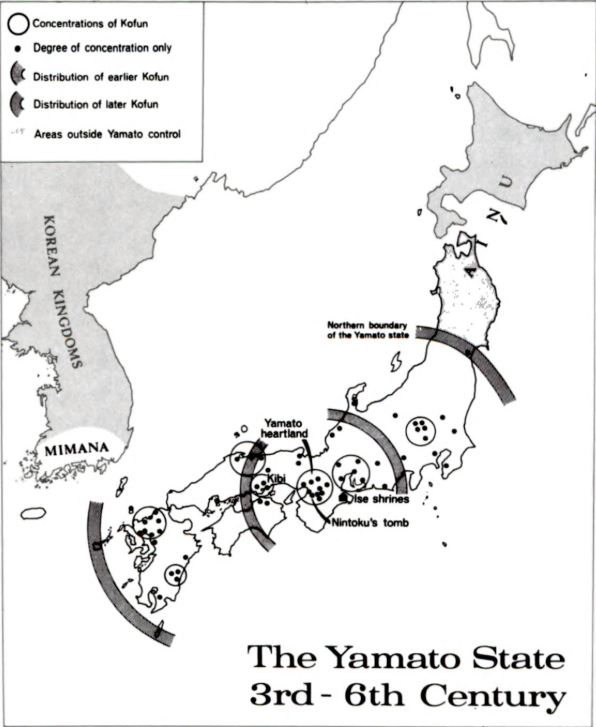
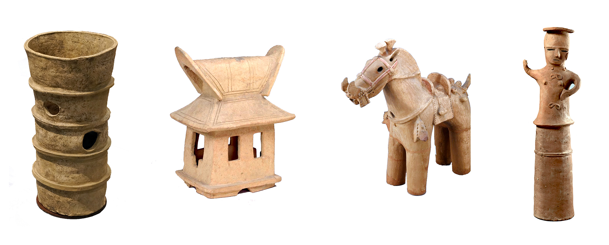
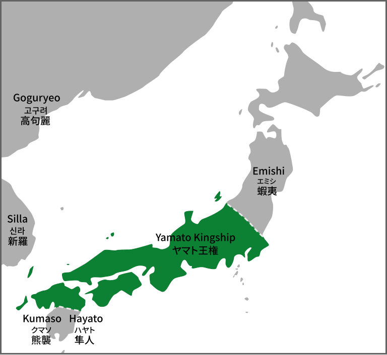

The Kofun period follows the Yayoi period and spans the years 250 to 538. The period saw the continued conflict between the many states that formed during the Yayoi period. Some regional clan magnates had grown to positions of immense power and could rule over considerable amounts of territory. Some benefitted from links with China which gave them access to better materials such as iron and bronze.
A manifestation of these new emerging powerful clans are their large burial mounds known as kofun, meaning "old grave". These tombs are where the period gets its name. These tombs are known for their distinctive keyhole shape. They are distributed throughout the entirety of Honshu and Kyushu and all share a consistent design. Kofun varied in size, with the largest tombs being the resting places of the most powerful members of society at the time. The largest tombs are located in the Yamato region, with the largest tomb purportedly being that of the legendary Emperor Nintoku in Osaka. It measures 486 metres in length.

Map showing distribution of Kofun across Japan.
A cluster of Kofun in the Yamato region near Sakai. The largest in the image is that of Emperor Nintoku.
Various artefacts have been found in kofun across the country. Many clay figures known as haniwa have been found in these tombs. They usually depict people, horses, soldiers, and even buildings. They are important as they show aspects of Kofun life, such as clothing, hairstyles, weaponry, armour and religious practices.

Haniwa of various forms from 4th to 6th centuries.
It was during the Kofun period that the Yamato dynasty would emerge and consolidate its power over Japan as a unified state. Records of this period are very scarce and later native Japanese histories do not yield much historical information about this period. The Yamato dynasty must have been one of the more powerful clans in the country during the Kofun period, and they must have waged war against other hostile clans in their region of Yamato. Whether through domination and conquest or through negotiation and pressure, they emerged towards the end of the period as the first sole rulers of a single united Japanese state.
The later Japanese histories, the Kojiki and the Nihon Shoki (both 8th Century), give a crafted and unreliable history of Japan whose purpose is to give legitimacy to the Yamato dynasty by giving the dynasty a divine origin story. Though it incorporates many mythological tales, there are echoes of historical events. Some figures described in these histories seem to be based on historical figures.
The earliest known writing in Japan dates to the Kofun period. Among the many things imported from China, the Chinese script was used in Japan to represent Japanese syllables. Discovered in 1978 , the 5th-century Sakitama Inariyama sword was found in a mound tomb in Saitama in eastern Japan. There is an inscription on the blade of the sword of Japanese rendered in Chinese characters.
Emperor Yuryaku is the 21st Emperor of Japan in the traditional order of succession given in the Kojiki and Nihon Shoki. Dates for his rule are put in the 5th century. Yuryaku's name is also given as Ōhatsuse Wakatakeru no Mikoto, which matches with the sword's "Great King Wakatakeru". The sword confirms that Yuryaku was based on a historical figure, and it gives some indication of what stories the chroniclers of the early histories took from the Kofun period and reinvented to suit the narrative they wanted to create for the Yamato dynasty.

Map of the Yamato dynasty during 4th - 7th centuriesTowards the end of the Kofun period, the Yamato Dynasty had a hegemony over the entirety of Central Japan and ruled over a new social order. They looked to China and its impressive empire for inspiration in governing the state. Japan had began to import and borrow many Chinese ideas and practices in all aspects of life. To the Yamato leaders, China was a model to follow in order to become a powerful and cultured state. Chinese ideas and practices about administration and social harmony infiltrated the Yamato court and its leaders followed these ideas in the hope of emulating Chinese successes. The Kofun period would come to an end in 538 A.D. with the introduction of a very important collection of ideas from China to Japan: Buddhism.